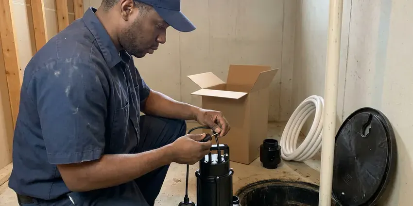
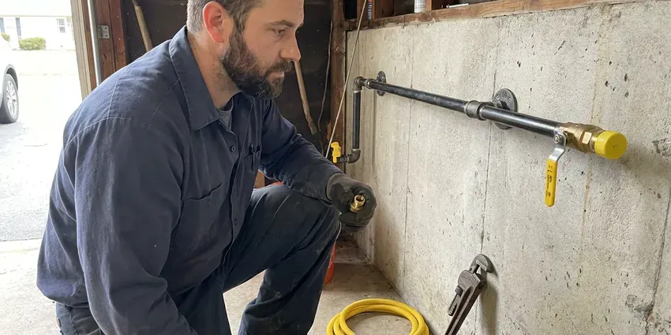

PEX Pipe Installation in Cape Girardeau, MO
FGV Plumbing runs new PEX mains from the meter to the house in Cape Girardeau, MO, by trenching or pulling new pipe through.
- Drywall Patched
- Manifold Layouts
- Labor Warranty
- Water Back Each Evening

PEX Repiping by FGV Plumbing in Cape Girardeau, MO
Permit, install, inspection and drywall patching are all on us.
PEX Installation in Cape Girardeau, MO From FGV Plumbing
FGV Plumbing repipes houses with a long history of leaks, low pressure or rusty water in Cape Girardeau, MO. Old galvanized closes up with rust from the inside, so a half-inch line ends up flowing like a much smaller one. PEX clears it up. The shower is usually where people notice it first, the morning after the new lines go live.
Some of what we do:
- Oxygen-barrier PEX for radiant floor heat
- Overhead repipes that abandon leaking slab lines
- Polybutylene removal and replacement

Additional Plumbing Installation Services in Cape Girardeau, MO
We install water heaters, pumps, lines, and fixtures across Cape Girardeau, MO with careful, permitted work that passes inspection the first time.


Sump Pump Installation in Cape Girardeau


Customers
Why Choose FGV Plumbing for PEX Pipe Installation in Cape Girardeau, MO?
Every PEX job gets a pressure test before the walls close. The gauge tells the story. If a crimp ring sits crooked or an expansion fitting did not seat fully, the test shows it while the joint is still reachable instead of after the paint dries.
- No Pinholes, There is no metal to pit, so water chemistry pinholes are off the table.
- Faster Repipes, A typical repipe wraps up inside four days.
- Tidy Worksite, Floors covered, dust contained, and we patch every opening.
Citywide Coverage
Distance in Cape Girardeau is not a problem for us. Grouping estimates by neighborhood keeps our drive time low, and that is a big reason we can usually come out within a day or two. We give you a window.
Experienced Team
Training at FGV Plumbing covers current PEX products. Fitting designs and tool heads change every few years, and using an old crimp head on a new fitting can produce a joint that looks fine and then weeps under pressure. We keep current.
Safety-First Approach
Code compliance begins before the first hole is drilled. We follow the plumbing code adopted in Cape Girardeau and Missouri, from support spacing and framing protection to the open-wall pressure test the inspector expects. That is how it passes.
Trusted Certified Cape Girardeau Plumbing Services Professionals
At FGV Plumbing, we are proud to offer certified plumbing services throughout Cape Girardeau, MO. Credentials matter in this trade. Every repair, install and maintenance visit follows strict safety and quality rules, and the plumbers doing the work carry recognized industry credentials.
Call Us Now PHCC Plumbing Contractor Recognition
PHCC Plumbing Contractor Recognition Better Business Bureau (BBB) Accreditation
Better Business Bureau (BBB) Accreditation Angi Certified Pro
Angi Certified Pro ISO 9001 Quality Management Certification
ISO 9001 Quality Management CertificationPEX Water Line Work We Do in Cape Girardeau, MO
New Construction PEX Plumbing in Cape Girardeau, MO
On a new build, FGV Plumbing runs PEX supply lines while the framing is still open in Cape Girardeau, MO. Plates get drilled, the manifold goes up, and every stub-out lands at the plan heights before the rough-in inspection and its pressure test. Nail plates go on wherever pipe crosses a stud. It keeps the schedule moving.

Whole-Home PEX Repiping in Cape Girardeau
Low pressure at every faucet, not just one, usually points at the pipe and not the fixtures. In an older house that usually means rust-choked galvanized or polybutylene with tired fittings, and a new faucet cartridge will not touch it. A whole-home repipe will. Every line from the main valve to each angle stop gets replaced, and the system is tested before anything gets closed up.
PEX-B Crimp and Clamp Systems in Cape Girardeau
PEX-B is stiffer, is cheaper by the roll, and joins with copper crimp rings or stainless cinch clamps over brass or poly-alloy fittings. A crimp joint is only as good as the tool, so we check every ring with a go/no-go gauge, and a ring that does not pass gets cut out and redone. It is a five-second check. Skipping it is how leaks start.
PEX-A, PEX-B, and PEX-C Systems in Cape Girardeau, MO
There are three grades of PEX, named for how the plastic is cross-linked at the factory. PEX-A is the most flexible and joins with expansion rings, PEX-B is stiffer and joins with crimp rings or cinch clamps, and PEX-C sits closer to B in feel. Every one is listed for potable water. We match the pipe to the fittings and tools from one maker so the warranty stays intact.
Full Home PEX Repiping in Cape Girardeau
Galvanized steel rusts from the inside out. After 40 or 50 years the bore is so choked with scale that a half-inch line delivers a trickle, and the water comes out tinted brown after it sits overnight. A full PEX repipe replaces all of it. Pressure comes back at the fixtures and the rust stops.
Manifold and Home-Run PEX Layouts in Cape Girardeau, MO
Think of a manifold like an electrical panel, but for water lines. Each fixture gets its own line from a central header, and each line gets its own valve, so you can shut off one toilet without killing water to the kitchen. It uses more pipe. The trade-off is almost no fittings hidden in the walls and steadier pressure when two showers run at once.
Emergency PEX Pipe Repair & Installation in Cape Girardeau, MO
PEX rarely fails on its own. Most failures trace back to a nail or screw through the pipe, a rodent working on an attic run, or a fitting that was not crimped fully. We carry the common sizes. Most emergency PEX repairs in Cape Girardeau, MO are a cut-and-splice job that takes under an hour once the drywall is open.

Commercial PEX Pipe Solutions in Cape Girardeau, MO
Apartment buildings, small offices and churches in Cape Girardeau, MO are good candidates for PEX as much as houses can. Each unit can get its own manifold and shutoff, so a leak in one apartment shuts down one apartment instead of the whole stack. Fire-rated walls need care. Every penetration through a fire-rated wall gets a listed firestop sleeve or sealant.
PEX Plumbers Near You in Cape Girardeau, MO
Typing PEX pipe installation near me into a phone gets you a lot of names. Ask each one how they route the pipe, whether they pressure test before closing walls, and who handles the permit, because those answers tell you more than a star rating. We will answer all three. Overhead routing where possible, a test with walls open, and the permit is on us.
Had another leak? Book a free repipe estimate with our local crew. We check the existing pipe, look at attic and crawlspace access, count fixtures, and hand you a written price and a daily schedule before leaving. No guesswork on cost. Most estimates take under an hour.
FGV Plumbing at a Glance
- Fully licensed plumbing team covering Cape Girardeau, MO
- Same-day appointments and 24/7 emergency response
- Clear written estimates, no hidden fees
- 4.9-star rated by 307+ Missouri customers
Cape Girardeau Map
Cape Girardeau Information
- Population
- 40,508
- Area codes
- Local
- Service area
- Cape Girardeau and communities within 40 miles
- Nearby
- Oakville, St. Louis, University City, Ballwin
Fewer fittings in the wall and no corrosion to speak of make PEX the common choice for Cape Girardeau, MO homes replacing copper, galvanized or polybutylene.
Expert Services
Reach out to FGV Plumbing for honest, reliable plumbing from people who know the trade in Cape Girardeau, MO.
Our Specialized Plumbing Services in Cape Girardeau, MO
At FGV Plumbing, you get every kind of plumbing service from one company across Cape Girardeau, MO. We go from leak detection all the way to full system installations, for homes and commercial buildings, and we do it quickly at a fair price. Explore our core services below:


From Estimate to Pressure Test, PEX Work in Cape Girardeau, MO
The real planning is done before we cut any drywall.
Request a Quote
Call (816) 330-2338 or fill out our form to set up a visit. Expect a few quick questions about your home.
Assess and Plan
In your Cape Girardeau home, we look at the current pipe and plan the route. Access points get marked before any cutting.
Install and Test
PEX goes in, every joint gets made, and the system is held at test pressure. Any weak joint shows up while it is still easy to reach.
Frequently Asked Questions About PEX Pipe Installation in Cape Girardeau
PEX work in Cape Girardeau runs from a few hundred dollars for a single repair up to $2,500 to $15,000 or more for a whole-home repipe. Most of the spread comes from home size, number of baths and attic access, plus whether patching and texture are in the quote. You get a firm number after we see the house.
Uponor for PEX-A, and Viega and Zurn for PEX-B. SharkBite push fittings come out only where a crimp tool will not fit.
We back our labor with a written warranty, and the manufacturer backs the pipe and fittings. The exact terms come with your estimate.
On a single repair, some handy homeowners do. For a full repipe or a water main, the tools, techniques and code rules add up quickly, and a missed crimp or an unsupported run can lead to water damage that costs far more than the labor you saved. That is the real risk.
Only slightly. Openings are small and targeted, and every one gets patched at the end. Most homeowners are surprised by how little drywall work it takes.
Yes. PEX sold for supply lines carries a potable-water listing under national standards. Look for the listing marks printed along the pipe.
Installed right, several decades at least. Makers usually warranty matched pipe and fittings for 25 years.
Several pinhole leaks, tinted water, low pressure through the whole house, or gray poly pipe. Repeated slab leaks are also a strong reason to repipe overhead.
What People Are Saying About Our Plumbing Experts?

Greg S.
I manage a small strip center with six tenants. FGV Plumbing handles our annual backflow testing and fixed a recurring clog in the shared sewer line that had been backing into the nail salon. Their reports come in clean and on time.
Commercial Plumbing · Cape Girardeau, MO
Carlos V.
Our house still had galvanized pipe, and upstairs the shower was a trickle. The crew repiped everything in PEX over three days and patched every drywall hole before they left. The pressure difference is night and day.
Repiping · Wildwood, MO
Robert G.
The camera showed a full break in our clay sewer line near the street. FGV Plumbing replaced it with a trenchless pipe burst, so the only digging was two small pits in the yard. They let us watch the footage before and after.
Sewer Line Replacement · St. Louis, MOBrian W.
I smelled gas behind the dryer and called right away. The plumber found a corroded flex connector, replaced it, and pressure tested the whole line before turning the gas back on. He let me watch the gauge hold steady for fifteen minutes.
Gas Line Repair · St. Louis, MOKevin O.
Before buying our house I paid for a sewer camera inspection. FGV Plumbing found a belly in the line that held standing water about forty feet from the cleanout. We used the video to get the sellers to fix it before closing.
Sewer Camera Inspection · Cape Girardeau, MO
Patricia H.
We had a slab leak that two other companies could not find. FGV Plumbing located it in under an hour with a listening device. They rerouted the line through the attic instead of breaking up the floor, so we kept our kitchen tile.
Slab Leak Repair · St. Louis, MO